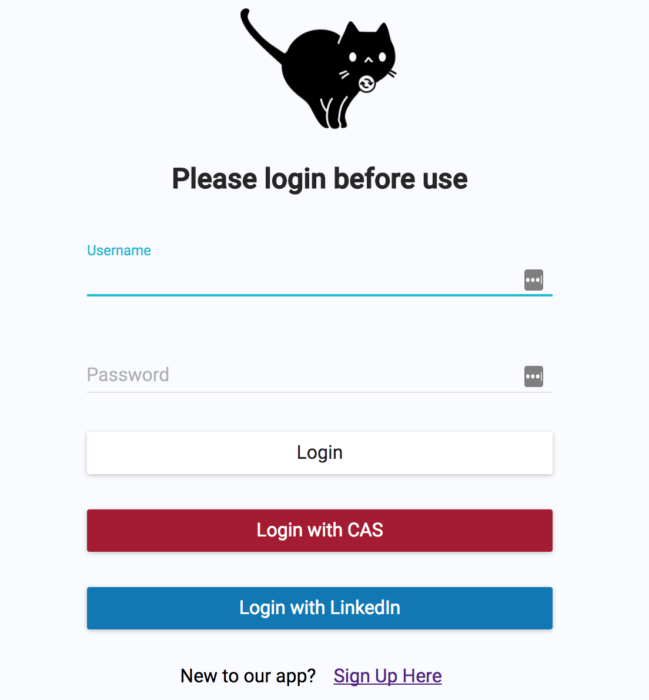
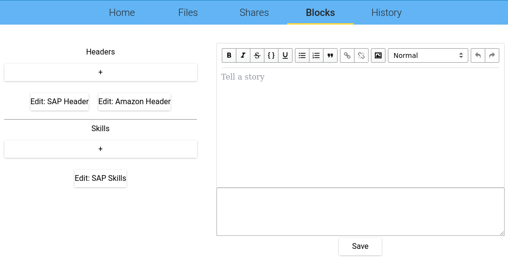
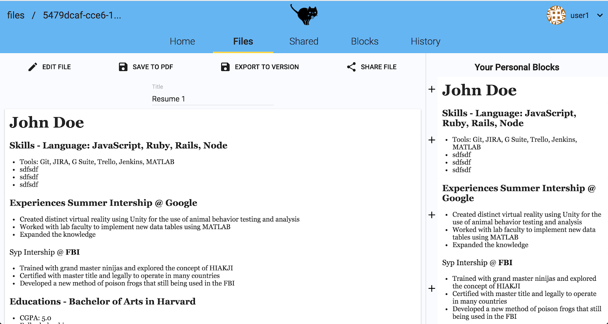
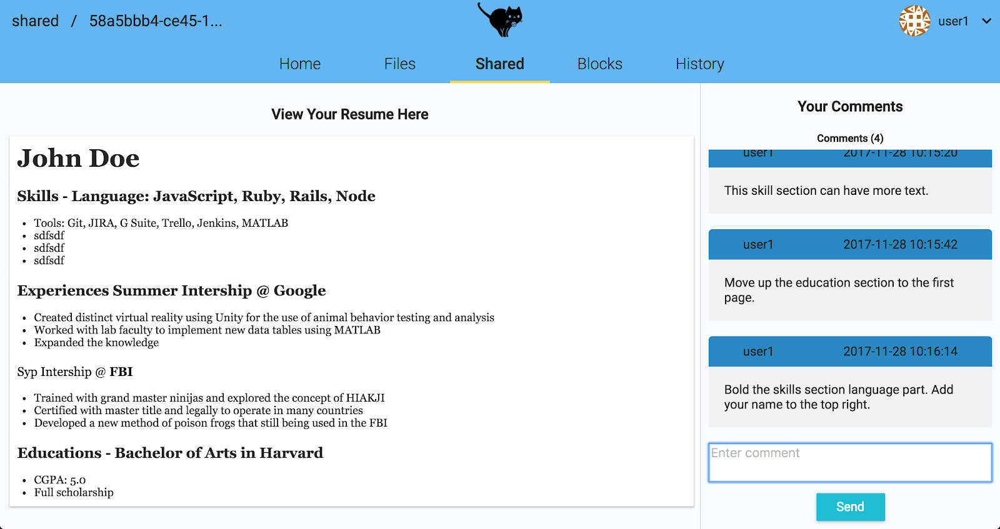
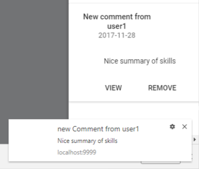

CV DUMP
CV Dump
CV Dump allows users to stylize, build, track, and share resumes like never before! The innovative Blocks System makes it easy to build a professional resume that is sure to stand out. Blocks are styled sections of information that users create and combine to build outstanding resumes. CV Dump’s Resume Sharing allows you and your colleagues to comment and improve eachothers resumes. Ensuring that you put your best foot forward! Job Application Tracking ensures you never miss out on your next big opportunity.
My contributions were:
- Designed and implemented the model and APIs on the backend to handle POST and GET requests from the client to load, create and save blocks.
- Designed and implemented the table for blocks in the Database.
- Designed and implemented the reducers, React view, and styling on the front end using React/Redux and Sass.
- Integrated the WYSIWYG editor into the blocks page.
- Implemented feature so a user could directly access and edit a blocks markdown.
- Frequently worked with other group members to help them develop and debug their code.
- Contributed to backend and APIs for the notifications feature.
-
Used
Sassto implement styling on the dashboard.
The Inspiration and Problem
I wanted to learn more developing as a full-stack engineer in an agile environment. This project let me rapidly grow and learn alot about development.
The Solution
CV dumps feature list includes:
- Users
- Shareable resumes
- Receive feedback
- Track job applications
- Resume revision history
- Sign in with Linkedin or CAS
Sign in with Linkedin or CAS
Users can easily create Blocks containing summaries or headers by using markdown or a featureful editor.
Tailor your resume through Blocks without rewriting anything.
Share your resume with friends and companies and get feedback.
Instant feedback is available via the notification and comment system.
The System and Technologies
The Game is build with:
-
ReactandRedux -
NodeJSandExpressJS -
MySQL -
Nginx -
SocketIO -
ChefandVagrant
Future Features
In the future, the following features could be added:
- Delete documents and blocks.
- Organizing documents and blocks.
- Uploading resumes and transforming their contents into blocks.
- Create new resume wizard
- A wizard that takes you through the steps of creating a new resume, asks you to answer questions about skills, education and accomplishments then pre builds blocks and a resume for you. You can then edit it to your liking.
- Style templates
- A selection style templates for the save to PDF feature.
- Overall better site UI
- Template blocks
- locks that are already partially filled out, i.e. a block for skills that comes pre filled out with pre styled stubs that you just need to change and fill in.
- Better LinkedIn integration.
- Use information from users LinkedIn to auto generate blocks for the user.